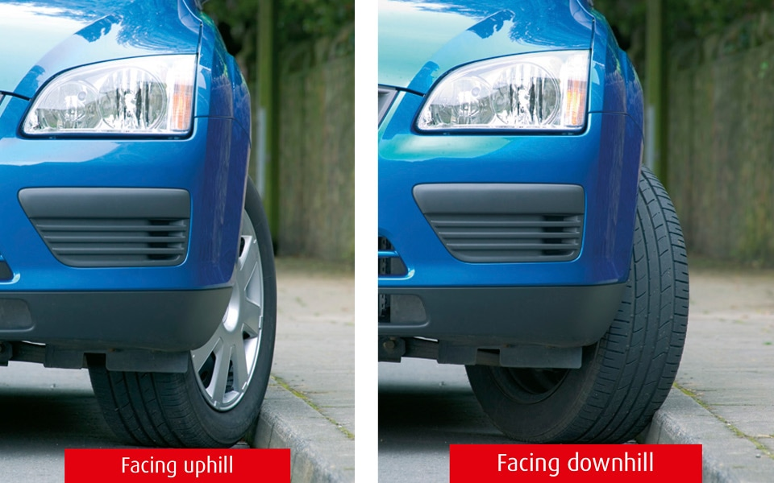

Waiting and parking (238 to 252)
3. Parking at night (248 to 252)
248
You MUST NOT park on a road at night facing against the direction of the traffic flow unless in a recognised parking space. Laws CUR reg 101 & RVLR reg 24
249
All vehicles MUST display parking lights when parked on a road or a lay-by on a road with a speed limit greater than 30 mph (48 km/h).
Law RVLR reg 24
250
Cars, goods vehicles not exceeding 1525 kg unladen weight, invalid carriages, motorcycles and pedal cycles may be parked without lights on a road (or lay-by) with a speed limit of 30 mph (48 km/h) or less if they are
Laws RVLR reg 24 & CUR reg 82(7)
251
Parking in fog. It is especially dangerous to park on the road in fog. If it is unavoidable, leave your parking lights or sidelights on.
252
Parking on hills. If you park on a hill you should
You MUST NOT park on a road at night facing against the direction of the traffic flow unless in a recognised parking space. Laws CUR reg 101 & RVLR reg 24
249
All vehicles MUST display parking lights when parked on a road or a lay-by on a road with a speed limit greater than 30 mph (48 km/h).
Law RVLR reg 24
250
Cars, goods vehicles not exceeding 1525 kg unladen weight, invalid carriages, motorcycles and pedal cycles may be parked without lights on a road (or lay-by) with a speed limit of 30 mph (48 km/h) or less if they are
- at least 10 metres (32 feet) away from any junction, close to the kerb and facing in the direction of the traffic flow
- in a recognised parking place or lay-by.
Laws RVLR reg 24 & CUR reg 82(7)
251
Parking in fog. It is especially dangerous to park on the road in fog. If it is unavoidable, leave your parking lights or sidelights on.
252
Parking on hills. If you park on a hill you should
- park close to the kerb and apply the handbrake firmly
- select a forward gear and turn your steering wheel away from the kerb when facing uphill
- select reverse gear and turn your steering wheel towards the kerb when facing downhill
- use ‘park’ if your car has an automatic gearbox.

Rule 252: Turn your wheels away from the kerb when parking facing uphill. Turn them towards the kerb when parking facing downhill